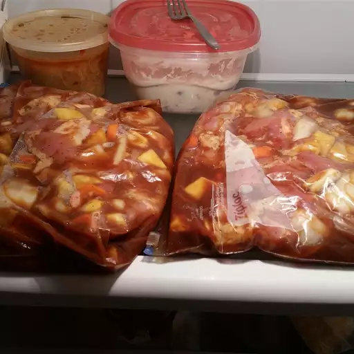

HOME
Rice Cooker Chicken

Photo by Allrecipes Member on All recipes.com
Description
My mom designed this rice cooker chicken recipe to free up the stove by using the rice cooker to steam and stew chicken thighs. It yields tender, almost slow-cooked chicken with a comforting taste. It takes a while to make but requires minimal work. You can use any cut of chicken, but dark meats come out especially soft. Serve with white rice, and enjoy!
Ingredients
- ½ cup soy sauce
- 6 cloves garlic, smashed
- 4 slices fresh ginger, coarsely chopped
- 1 teaspoon monosodium glutamate (such as Ac'cent) (Optional)
- 1 teaspoon salt
- ½ teaspoon ground black pepper
- ½ teaspoon sesame seed oil
- 4 boneless chicken thighs
- 1 cup water, or as needed, divided
- 1 ½ teaspoons cornstarch
Steps
- Whisk soy sauce, garlic, ginger, monosodium glutamate, salt, black pepper, and sesame oil together in a bowl until salt dissolved; pour into a large resealable plastic bag. Add chicken thighs, coat with marinade, squeeze out excess air, and seal the bag. Marinate in the refrigerator for 1 hour.
- Remove thighs from marinade and shake off excess. Pour marinade into a programmable electric rice cooker.
- Whisk 2 tablespoons water and cornstarch together in a small bowl until smooth; whisk into marinade. Add thighs and just enough water to barely cover; stir.
- Seal rice cooker and select regular rice setting according to the manufacturer's instructions. Cook until steam comes out of cooker's top, about 20 minutes. Set cooker's timer for 10 minutes; cook. Unlock cooker; stir. Set cooker's timer for 10 minutes; cook. Switch cooker to keep warm setting; rest chicken in cooker for 20 minutes.